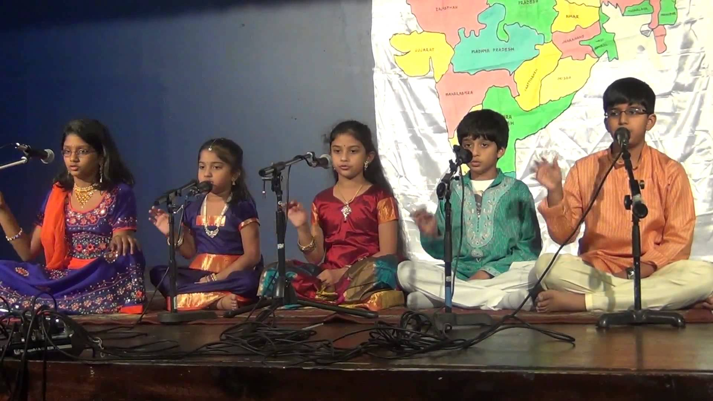
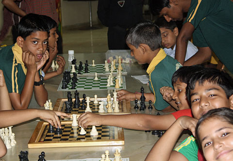
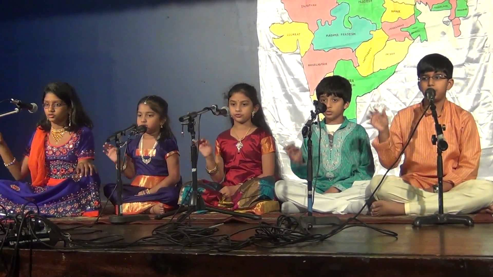
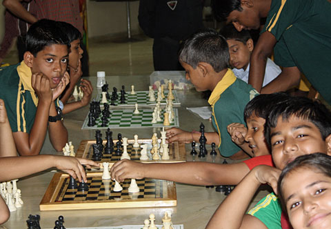

Extracurricular activities

Cricket, volleyball, badminton, yoga, karate, and aerobics.

Carnatic music and mridangam.

Chess, drawing and painting.

Bharatanatyam with Pushpanjali etc.
Welcome to HCCV Chennai!
We aim to give every child the very best start possible in their education through vibrant and engaging teaching.
We enable the children to become active learners by offering challenging, broad and balanced CBSE curriculum programs.
Our children enjoy a wide range of academic and co-curricular experiences which bring the curriculum to life and make learning fun.
All our facilitators ensure the best possible quality of education for the children in every year group.
We help students learn in the ways that are right for them, nurturing a joy for learning and a passion to pursue their interests.
Education from Kindergarten to Class XII
Tamil, Hindi and Sanskrit as second and third languages
Group I
English Core, Maths, Physics, Chemistry, Computer Science
Group II
English Core, Maths, Physics, Chemistry, Biology
Group III
English Core, Maths, Business Studies, Accountancy, Economics
Group IV
English Core, Business Studies, Accountancy, Economics, Computer Science
Cricket, volleyball, badminton, yoga, karate, and aerobics.

Carnatic music and mridangam.

Chess, drawing and painting.
Bharatanatyam with Pushpanjali etc.

Our school has a well-equipped computer lab with the latest software. The computer classes are conducted in the lab. So we are able to understand better and get good practical training to improve our computing skills.

Our school library has a good selection of books for children. We have English readers graded for children having different levels of reading ability. We also have books on moral science, religion and science.

Our math lab enables us to visually understand the concepts we learnt in the maths class. There are many models and learning aids which makes our lab a great place to understand maths.

The drawings and the models submitted by our school for green cover projects were found to to be very innovative and were highly appreciated by everyone.
The school achieved the third place in a series of competitions in Sanskrit organised by the Samskrita Sahitya Parishad. A total of 200 students from 10 educational institutions participated.

Our school made it to the final league for the interschools cricket competition. It was a great achievement. Our lads had practised very hard to get there.
The school intends to set up an examination coaching centre inside the campus. Highly-qualified teachers will be recruited for this purpose. This facility will enable more of our students to pass these examinations. The fees will be very competitive when compared to outside coaching centres.
A smart classroom will be set up to enable the students to deepen their understanding of the subjects. The latest audiovisual equipment,training and education animation software will be procured from reputed suppliers.
Mylswamy Annadurai

Sudha Ragunathan
Sudha Ragunathan is a Carnatic vocalist, singer and composer. She was conferred the Kalaimamani award by the Government of Tamil Nadu in 1994, Padma Shri (2004) and Padma Bhushan (2015) by the Government of India. Sudha Ragunathan has performed at the Madras Music Season every year since 1990. Ragunathan has performed and collaborated with other artists all over the world. She has performed at the United Nations and the Théâtre de la Ville, Paris.
Know more
K. Vijay Kumar IPS
Dr. V. Shanta